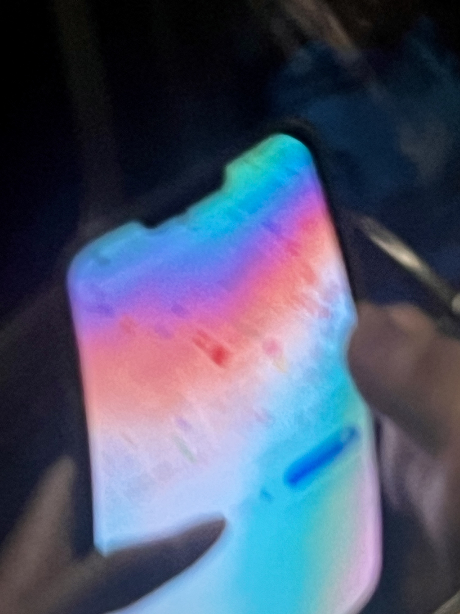
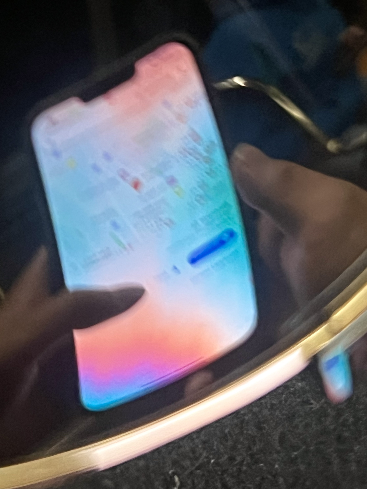
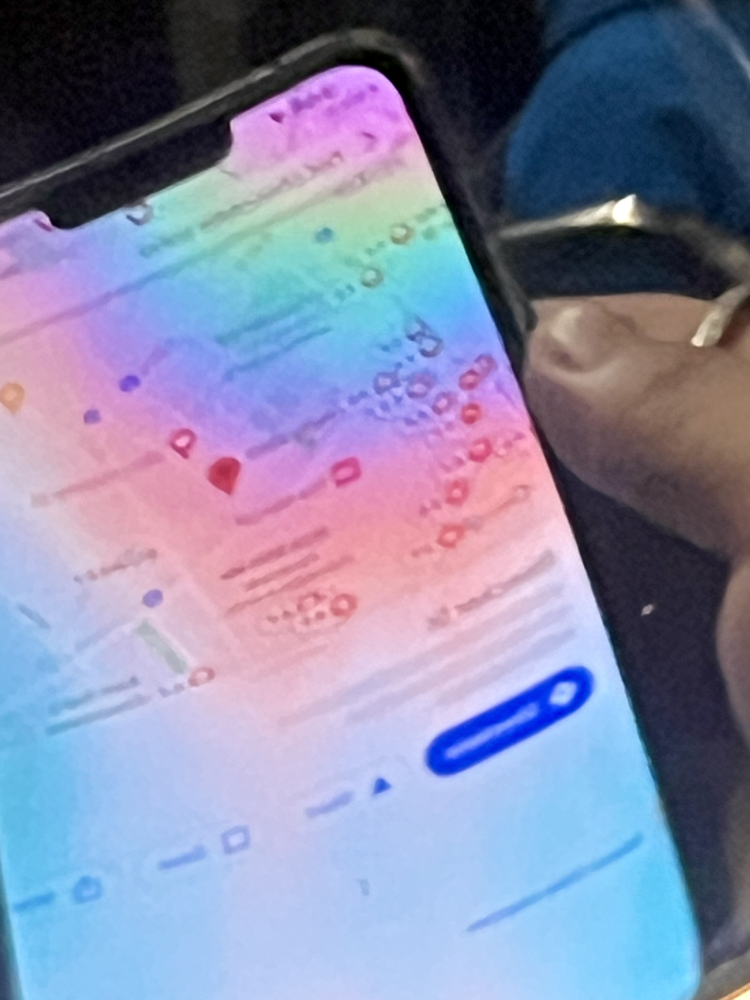

Dive into the fascinating interaction of light and glass to discover how these elements can change your perception of reality.



My Reflection
Discovering something new within my daily routine adds excitement and interest to my life. Since childhood, I've maintained a deep curiosity about the world around me, consistently seeking answers to my questions from adults or through my exploration.
This week's theme focuses on 'reflections.' A typical reflection is a mirror. Here, I've used mirrors as a metaphor to emphasize that various everyday elements, besides mirrors, also have reflective qualities. I've mainly utilized the windows of the New York subway and the surface of Central Park's lake to capture the interplay of the screen of my friend's phone, light, and sky, showcasing the transient nature of reflections, often overlooked unconsciously. As I explored New York City, I found new things within our daily lives through keen and persistent observation.
Unlike the typically undistorted mirrors we face, I've encountered mirrors that distort images and alter colors immensely. Seeing these extraordinary manifestations with my eyes has been genuinely captivating as they differ from the shapes and colors I expected. Thus, this distorted reality presents a distinct form of reflection and mirror.
FYI, your computer screen can also be a mirror!